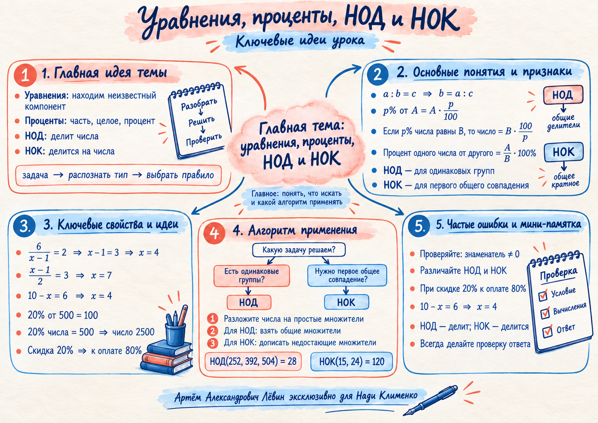

{kind=link}
Пример 1 · знаменатель
Ограничение: , поэтому .
Проверка: .
Занятие · 22 сентября 2026
Четыре знакомых сюжета соединяются одним навыком: сначала определить, что именно требуется найти, затем выбрать подходящее правило и проверить смысл результата.
Опорная пара занятия: НОД делит исходные числа, НОК делится на исходные числа.

01 · Неизвестный компонент
В простых уравнениях полезно видеть роль неизвестного: знаменатель, числитель или вычитаемое. Для дробного уравнения ограничение знаменателя проверяется до преобразований.
Ограничение: , поэтому .
Проверка: .
02 · Часть и целое
Перед вычислением определите, что требуется: часть от целого, всё число по известной части или процентное отношение двух чисел.
После скидки остаётся оплатить 80% исходной цены.
03 · Теория чисел
НОД и НОК строятся через простые множители, однако отвечают на разные вопросы. НОД связан с разбиением на одинаковые группы. НОК показывает первое общее совпадение или наименьшую общую сумму.
Наибольший общий делитель — наибольшее натуральное число, которое делит каждое исходное число.
При факторизации: берём только общие простые множители в наименьших степенях.
Наименьшее общее кратное — наименьшее натуральное число, которое делится на каждое исходное число.
При факторизации: берём все необходимые простые множители в достаточных степенях.
Получается 28 одинаковых комплектов. В каждом: тетрадей, ручек и карандашей.
180 рублей делятся и на 45, и на 60. Это соответствует 4 пирожкам по 45 рублей или 3 пирожкам по 60 рублей.
Число 240 тоже является общим кратным, но 120 меньше.
04 · Распознавание
Смысл задачи определяет действие. Слова «одинаковые группы» ведут к общему делителю. Формулировки про первое общее совпадение ведут к общему кратному.
Путь 1
Ищите НОД. Он должен делить каждое исходное количество.
Путь 2
Ищите НОК. Он должен делиться на каждое исходное число.
05 · Путь А
Задания повторяют ключевые действия занятия: восстановление неизвестного компонента, скидку и распознавание НОД/НОК.
Куртка стоила 4800 рублей. Цену снизили на 15%. Найдите стоимость куртки после скидки.
Для школьного мероприятия подготовили 168 тетрадей и 252 карандаша.
| Задание | Ответ |
|---|---|
| 1а | |
| 1б | |
| 1в | |
| 2 | 4080 руб. |
| 3а | 84 набора |
| 3б | 2 тетради и 3 карандаша |
| 3в | 72 минуты |
Какая проверка обязательна для ?
После скидки 20% какая доля цены остаётся к оплате?
В условии требуется максимально много одинаковых комплектов. Что искать?
Нужно найти первое общее совпадение двух периодов. Что искать?
Отмечено: 0 из 6.